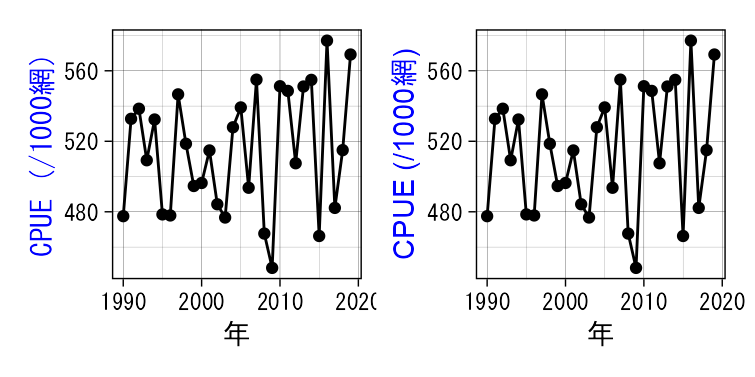
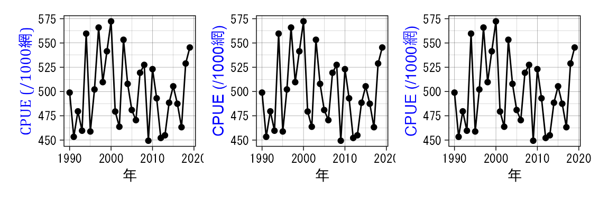
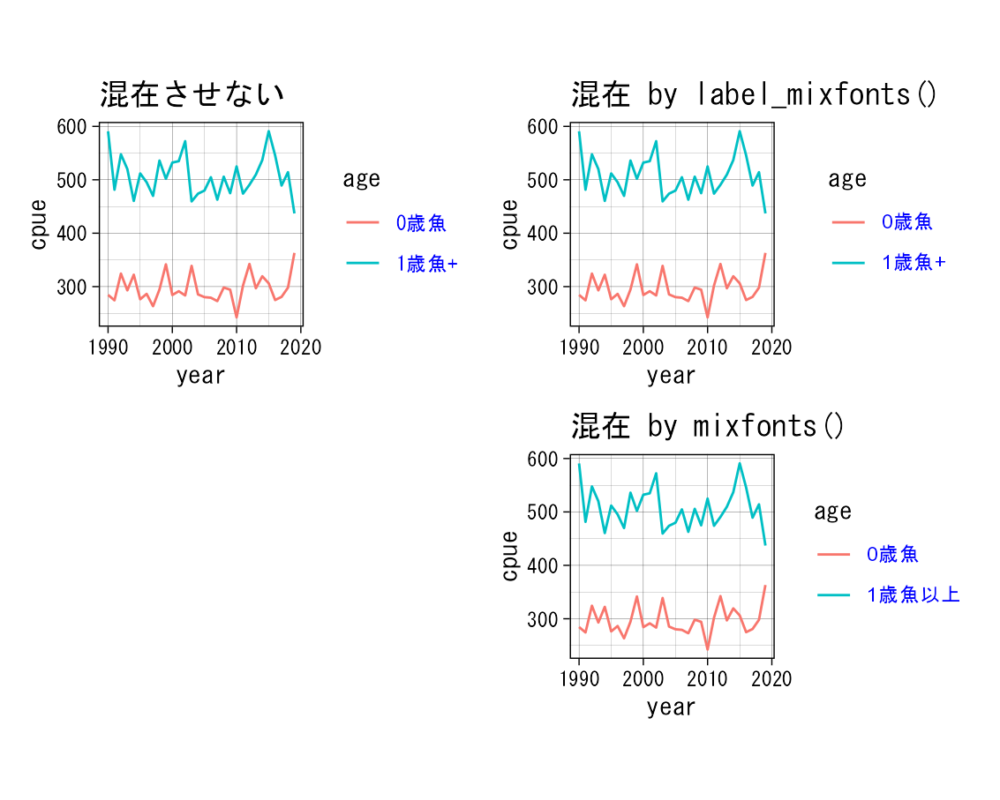

はじめに
- 世間的には (?) 特殊な事例かもしれませんが,
ggplot2で作図を行う時, 英数字と日本語が混ざったラベル—例えばCPUE (/1000網)—のフォントを英数字と日本語で 別にしてください, という指摘を受けることがあります. - ggplotにおける図タイトルや軸ラベル,
凡例ラベル等のそれぞれのフォントは,
ggplot2::theme()等を使って個別に変更することができます. しかし, 一つの文字列内で 複数のフォントを混在させるのは, かなりの手間がかかります. - そこで, その手間を少しでも楽にするために作成したのが
mixfonts()です.
【重要】 ragg 📦
がフォント混在の問題を解決してくれるかもしれません！
下記の参考情報をご覧ください.
いい仕事をしてくれる方々に心よりの感謝！！
使用例
## devtools::install_github("Gedevan-Aleksizde/fontregisterer", upgrade = "never")
library(frabento) # このパッケージ
library(fontregisterer) # フォントの利用を楽にするため
library(ggtext) # element_markdown() を使うため
library(tidyverse) # ggplot2とtidyなデータハンドリング
library(patchwork) # ggplotを簡単, キレイにレイアウト
library(ragg) # Great raster基本的な使用例: 軸タイトル
mixfonts()では,
デフォルトのASCII文字フォントをArial,
マルチバイト文字フォントをMS Gothicにしています.
theme_set(theme_linedraw(base_family = "MS Gothic") +
theme(aspect.ratio = 1/1)) # アスペクト(縦横)比
# 仮想データ作成
dat <- tibble::tibble(cpue = rnorm(n = 30, mean = 500, sd = 35),
year = seq(1990, length.out = 30, by = 1))
# まずはmixfontsを使わない
g <- ggplot(data = dat, aes(x = year, y = cpue)) +
geom_path() + geom_point() +
labs(x = "年", y = "CPUE (/1000網)") +
theme(axis.title.y = element_text(color = "blue"))
# mixfontsを使うと
gm <- g + labs(y = mixfonts("CPUE (/1000網)")) +
theme(axis.title.y = ggtext::element_markdown(angle = 90, color = "blue"))
# use patchwork
g | gm
フォントを変更してみます. fontregisterer 📦
が威力を発揮します.
gm1 <- gm + labs(y = mixfonts("CPUE (/1000網)", asciifont = "Cambria"))
gm2 <- gm + labs(y = mixfonts("CPUE (/1000網)", mbytefont = "Meiryo"))
gm3 <- gm + labs(y = mixfonts("CPUE (/1000網)",
ascii = "InconsolataForPowerline-g",
mbyte = "ToppanBunkyuMidashiGothicStdN-ExtraBold"))
# patchwork
gm1 + gm2 + gm3 + plot_layout(ncol = 3)
文字列の折り返しもできます.
# 折り返したい位置に改行記号 `\n` を挿入
gm4 <- gm + labs(y = mixfonts("A海区における\n大中型まき網漁業の\nCPUE (/1000網)"))
# mixfont() を使わなくても折り返しはできるが, フォントは混在できない.
g_ <- g + labs(y = "A海区における\n大中型まき網漁業の\nCPUE (/1000網)")
# フォントを変更すると日本語部分が豆腐化※ --> 上書したフォントが優勢になる.
# ※ GitHub Pages上では日本語部分が補完されて表示されているかもしれません.
g__ <- g_ + theme(axis.title.y = element_text(family = "Arial"))
# patchwork
gm4 + plot_spacer() + g_ + g__ + plot_layout(ncol = 2, byrow = TRUE)
使用例2: 凡例
# 仮想データ
d2 <- tibble::tibble(cpue = c(rnorm(n = 30, mean = 300, sd = 25),
rnorm(n = 30, mean = 500, sd = 35)),
year = rep(seq(1990, length.out = 30, by = 1), times = 2),
age = rep(c("0歳魚", "1歳魚+"), each = 30))
p0 <- ggplot(data = d2, aes(x = year, y = cpue, group = age)) +
geom_path(aes(color = age)) +
theme(legend.text = element_text(color = "blue")) +
labs(title = "混在させない")
pm1 <- ggplot(data = d2, aes(x = year, y = cpue, group = age)) +
geom_path(aes(color = age)) +
scale_color_discrete(labels = label_mixfonts()) +
theme(legend.text = ggtext::element_markdown(color = "blue")) +
labs(title = "混在 by label_mixfonts()")
pm2 <- ggplot(data = d2, aes(x = year, y = cpue, group = age)) +
geom_path(aes(color = age)) +
scale_color_discrete(labels = mixfonts(c("0歳魚", "1歳魚以上"))) +
theme(legend.text = ggtext::element_markdown(color = "blue")) +
labs(title = "混在 by mixfonts()")
# patchwork
p0 + pm1 + plot_spacer() + pm2 + plot_layout(ncol = 2, byrow = TRUE)
参考情報
類似した問題は stack overflow においてすでに解決策が提示されています. これにインスピレーションを受け, この関数を作成しました.
raggの紹介ブログ: fallbackのフォントをどう指定したらよいかがわかりませんが, 指定できるのであれば これ以上のパッケージはないと思います. 今後の動向に注目です.
# 豆腐化した文字をfallback (最後の拠り所) で補完する
fallback_text <- "This is English, この文は日本語です 🚀"
ggplot() + theme(aspect.ratio = 1/2) +
geom_text(aes(x = 0, y = 1, label = fallback_text, family = "Arial"),
size = 3.5)- fontregistererの作者のページ に日本語フォント周りの情報が色々まとまっています.